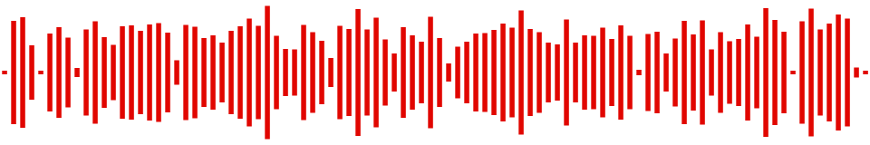

Featured Story
A Race Nobody Saw Coming
Rain, collisions and one extraordinary strategy decision created one of modern racing's most unexpected afternoons.
- Ocon, from the grid to the flag
- P8 to P1

StoryCast Original / Racing Stories / 001
The 2021 Hungarian Grand Prix.
One rainy afternoon. A chaotic opening lap. An extraordinary restart. And a winner nobody expected.
Featured Story
Rain, collisions and one extraordinary strategy decision created one of modern racing's most unexpected afternoons.
Three Defining Moments

A chain of collisions dramatically reshaped the race before the opening lap was complete.
Read about the first-lap chaos
Lewis Hamilton lined up alone on the starting grid while the other remaining drivers pitted.
Read about the lone restartEsteban Ocon claimed an extraordinary first Formula 1 victory.
Read about Ocon's victoryListen
A short original audio introduction to the extraordinary events of the 2021 Hungarian Grand Prix.

Narrated by a synthetic voice. There is no music or other sound.
This is StoryCast. On the first of August, 2021, the Hungaroring hosted the Hungarian Grand Prix.
Rain fell just before the start, and every car lined up on intermediate tyres. Moments after the start, a collision at the first corner took several cars out, and the race was stopped under a red flag.
As the track dried, Lewis Hamilton lined up alone on the starting grid. Every other car started from the pit lane, on slick tyres.
Out of the chaos, Esteban Ocon took the lead, held off the pressure, and won his first Formula 1 race. This is the story of the day everything went wrong.
Download the transcript (plain text)Accessible by Design
One story, three ways in. Choose the format that suits you: each one tells the whole race.